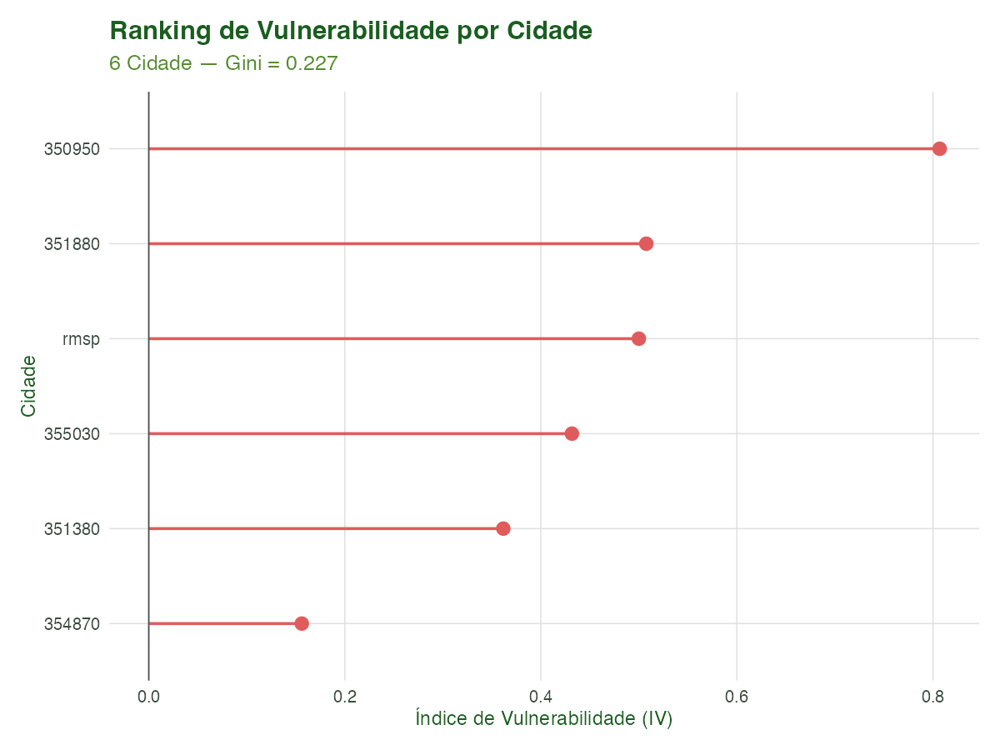
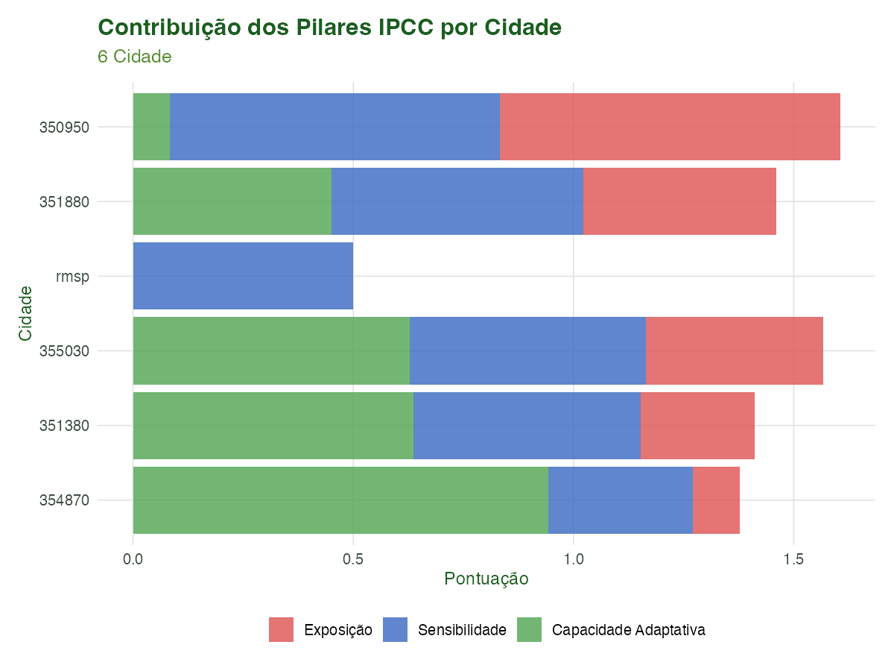
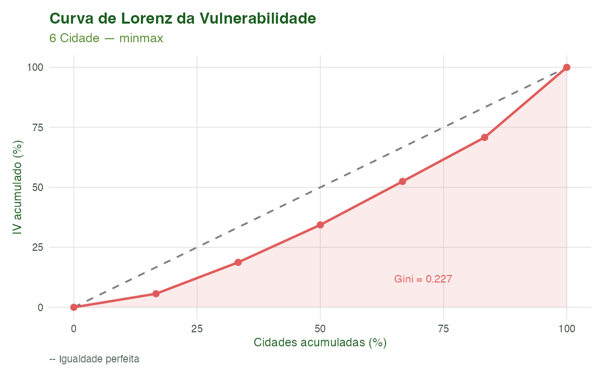
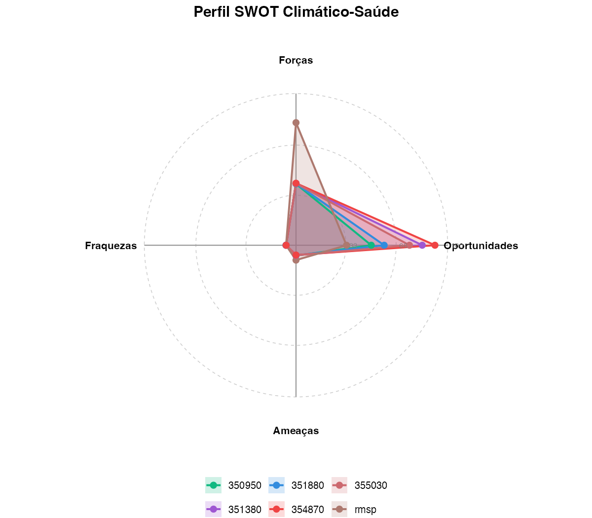
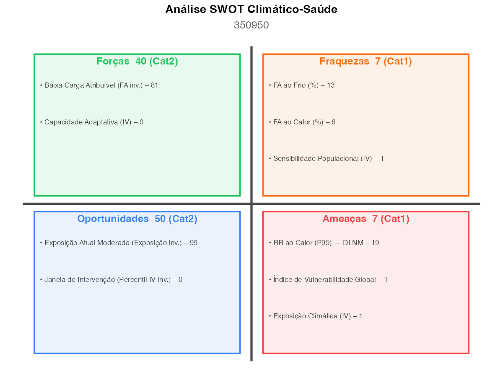
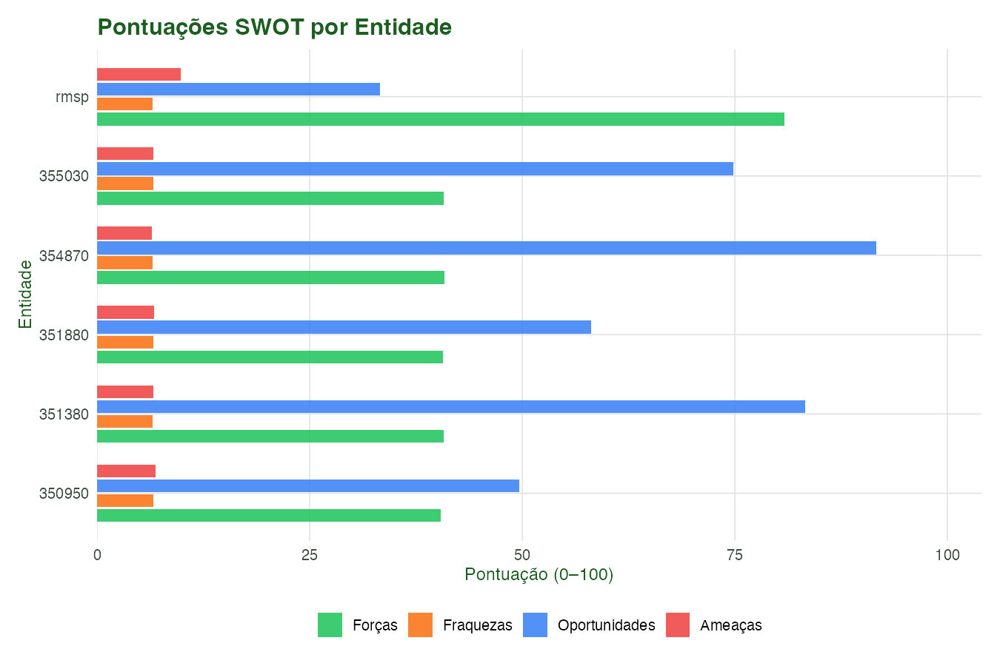

Modelagem 08: Índice de Vulnerabilidade e Síntese SWOT
Equipe climasus4r
14/06/2026
Source:vignettes/mod-08-vulnerabilidade-swot.Rmd
mod-08-vulnerabilidade-swot.RmdObjetivo
Ao final deste tutorial você será capaz de:
-
Compor um Índice de Vulnerabilidade Composto (IVC)
segundo a estrutura de três pilares do IPCC AR6 — Exposição climática,
Sensibilidade populacional e Capacidade Adaptativa — a partir de
indicadores de saúde-clima, socioeconômicos e de infraestrutura de
saúde, usando
sus_mod_vulnerability_index(); - Interpretar o ranking de vulnerabilidade entre municípios e medir a desigualdade territorial com o Coeficiente de Gini e a curva de Lorenz;
-
Sintetizar os resultados em uma análise SWOT
(Forças, Fraquezas, Oportunidades e Ameaças) orientada a políticas
públicas de saúde-clima, usando
sus_mod_swot(); -
Visualizar e comunicar os resultados com os
gráficos pareados
sus_mod_plot_vulnerability()(ranking, pilares, Lorenz) esus_mod_plot_swot()(radar, matriz 2×2, barras).
Este é o oitavo módulo da série de Modelagem do
climasus4r. As entradas principais são o objeto
climasus_af do Módulo M2 (mod_af.rds) e o
objeto climasus_dlnm do Módulo M1
(mod_dlnm_fit.rds). A saída principal é o objeto
climasus_vi salvo como mod_vi.rds para reuso
em relatórios finais e comunicação de risco.
Contexto científico
Vulnerabilidade climática segundo o IPCC
O Quinto Relatório de Avaliação do IPCC (AR5, 2014) estabeleceu o arcabouço de três pilares que define vulnerabilidade — posteriormente refinado no AR6 (2022) — como uma função de três componentes interdependentes:
- Exposição (Exposure): grau em que um sistema ou população é afetado por estressores climáticos (temperatura extrema, ondas de calor, dias de calor acima do percentil 90);
- Sensibilidade (Sensitivity): nível de resposta de um sistema ao estressor, condicionado por fatores intrínsecos como proporção de idosos, prevalência de doenças crônicas e resposta dose-efeito estimada por modelos DLNM;
- Capacidade Adaptativa (Adaptive Capacity): conjunto de recursos institucionais, econômicos e infraestruturais que permitem ao sistema modular seus impactos (índice de desenvolvimento humano, cobertura de água tratada, densidade de unidades básicas de saúde).
A fórmula do índice composto, proposta originalmente por Turner et al. (2003) e adotada na literatura de vulnerabilidade social (Cutter, Boruff & Shirley, 2003; Benmarhnia et al., 2015), inverte o pilar de Capacidade Adaptativa antes da combinação, pois maior capacidade significa menor vulnerabilidade:
em que , e são as médias ponderadas dos indicadores normalizados (min-max ou z-score) do município para cada pilar, e , , são os pesos inter-pilares. Indicadores faltantes são tratados com reponderação automática.
Normalização min-max e z-score
A normalização min-max projeta cada indicador para o intervalo :
A normalização z-score padroniza pela média e desvio padrão, preservando a distribuição original — útil quando os indicadores têm escalas muito heterogêneas, mas requer transformação de volta para interpretação direta.
Desigualdade territorial e Curva de Lorenz
A Curva de Lorenz é o instrumento clássico para visualizar a concentração de qualquer recurso ou fardo em uma população ordenada. No contexto de risco climático, a curva acumula a proporção do IVC total (eixo y) contra a proporção de municípios (eixo x), do menos para o mais vulnerável. Quanto maior a área entre a curva e a diagonal de igualdade perfeita, maior o Coeficiente de Gini — que varia de 0 (perfeita igualdade) a 1 (todo o risco concentrado em um município).
Análises de concentração do risco climático são aplicadas em escala multi-cidade por Gasparrini et al. (2017) e em estudos nacionais de vulnerabilidade socioambiental no Brasil por Confalonieri et al. (2009) e Marengo et al. (2022).
Análise SWOT orientada a políticas de saúde-clima
O framework SWOT (Andrews, 1971), amplamente utilizado em planejamento estratégico, foi adaptado para a gestão de riscos climático-sanitários. Nesta abordagem:
- Forças (S) representam fatores protetores existentes — capacidade adaptativa elevada, baixa fração atribuível total;
- Fraquezas (W) refletem vulnerabilidades atuais — alta sensibilidade populacional, elevadas frações atribuíveis ao calor e ao frio;
- Oportunidades (O) identificam janelas de intervenção — municípios com índice de vulnerabilidade relativamente baixo e exposição atual moderada têm espaço para avançar na prevenção antes de atingirem níveis críticos;
- Ameaças (T) sinalizam riscos emergentes ou já presentes — exposição climática elevada, alto risco relativo de calor (DLNM), elevado número atribuível.
Dados utilizados
| Objeto | Origem | Conteúdo |
|---|---|---|
caso_espacial.rds |
Tutorial T5 | Geometrias sf dos municípios da RMSP |
caso_socio.rds |
Tutorial T6 | Indicadores socioeconômicos por município (HDI, % idosos, etc.) |
mod_dlnm_fit.rds |
Módulo M1 | Objeto climasus_dlnm ajustado para a RMSP |
mod_af.rds |
Módulo M2 | Objeto climasus_af com FA% total/calor/frio |
Quando qualquer um desses quatro arquivos estiver ausente (execução fora da cadeia completa), o script de pré-renderização sintetiza dados realistas com aviso — o Rmd renderiza normalmente, exibindo os resultados ilustrativos.
Pipeline completo
Carregar entradas encadeadas
# Objeto climasus_af do Módulo M2
mod_af <- if (file.exists("vignettes-pt/dados/mod_af.rds")) {
readRDS("vignettes-pt/dados/mod_af.rds")
} else {
NULL # fallback: SWOT rodará sem AF
}
# Objeto climasus_dlnm do Módulo M1
mod_dlnm <- if (file.exists("vignettes-pt/dados/mod_dlnm_fit.rds")) {
readRDS("vignettes-pt/dados/mod_dlnm_fit.rds")
} else {
NULL # fallback: sem extração DLNM automática
}
# Indicadores socioeconômicos
caso_socio <- if (file.exists("vignettes-pt/dados/caso_socio.rds")) {
readRDS("vignettes-pt/dados/caso_socio.rds")
} else {
# Mínimo realista para o script funcionar sem a cadeia completa
data.frame(
city = c("Sao Paulo", "Guarulhos", "Santo Andre", "Osasco", "Maua"),
pct_idosos = c(16.2, 12.4, 14.8, 13.1, 11.9),
pct_doenca_cr = c(28.1, 24.3, 26.7, 22.8, 20.5),
hdi = c(0.845, 0.763, 0.815, 0.776, 0.742),
pct_agua = c(97.2, 88.4, 94.1, 90.3, 85.7),
densidade_ubs = c(6.8, 3.2, 5.1, 4.0, 2.9)
)
}Construir os três pilares IPCC
Cada pilar é fornecido como um data.frame com uma coluna
de identificador municipal (city_col = "city") e colunas
numéricas de indicadores. Indicadores faltantes para algum município são
preenchidos com NA e excluídos da média ponderada do pilar,
sem forçar exclusão total.
# ----- Pilar E: Exposição Climática ------------------------------------------
# Fonte: sus_climate_aggregate() (temperatura maxima media, dias de calor P90,
# contagem de ondas de calor por ano)
exposure_df <- data.frame(
city = caso_socio$city,
tmax_media = c(29.8, 31.2, 28.9, 30.1, 31.8), # grau Celsius
dias_calor_p90 = c(52, 68, 45, 58, 72), # dias/ano
ondas_calor = c(4, 8, 3, 6, 9) # eventos/ano
)
# ----- Pilar S: Sensibilidade Populacional -----------------------------------
# Fonte: caso_socio.rds + extração automática de climasus_dlnm (argumento fits)
sensitivity_df <- caso_socio[, c("city", "pct_idosos", "pct_doenca_cr")]
# ----- Pilar AC: Capacidade Adaptativa ---------------------------------------
# Fonte: caso_socio.rds (HDI, cobertura hídrica, densidade UBS)
adaptive_capacity_df <- caso_socio[, c("city", "hdi", "pct_agua", "densidade_ubs")]Ajustar o Índice de Vulnerabilidade Composto
sus_mod_vulnerability_index() aceita um argumento
fits (lista nomeada de objetos climasus_dlnm)
para extração automática das métricas dlnm_hot_rr,
dlnm_cold_rr e dlnm_sensitivity_index, que são
automaticamente mescladas ao pilar de sensibilidade.
# Opcional: lista nomeada de climasus_dlnm (um por cidade)
# fits_dlnm <- list(sao_paulo = mod_dlnm) # ajuste por municipio
vi_fit <- sus_mod_vulnerability_index(
exposure_df = exposure_df,
sensitivity_df = sensitivity_df,
adaptive_capacity_df = adaptive_capacity_df,
fits = NULL, # ou: fits_dlnm (lista climasus_dlnm)
city_col = "city",
normalize = "minmax", # "minmax" ou "zscore"
weights = c(tmax_media = 2, # dobrar peso da Tmax
pct_idosos = 2), # dobrar peso da proporção de idosos
pillar_weights = c(exposure = 1.5,
sensitivity = 1.0,
adaptive_capacity = 1.0),
hot_percentile = 0.99,
cold_percentile = 0.01,
lang = "pt",
verbose = TRUE
)
# Inspecionar o resultado
print(vi_fit)O objeto climasus_vi contém:
| Elemento | Tipo | Conteúdo |
|---|---|---|
$vi_table |
tibble | IVC, escores dos pilares, rank e percentil por cidade |
$pillar_scores |
tibble (long) | Escores brutos dos três pilares por cidade |
$normalized_indicators |
tibble | Indicadores normalizados (prefixos exp_,
sen_, ac_) |
$raw_indicators |
tibble | Indicadores originais sem normalização |
$weights |
lista | Pesos intra-pilar e inter-pilar efetivamente usados |
$gini_coefficient |
numérico | Gini do IVC (0 = igualdade perfeita) |
$meta |
lista | Parâmetros da chamada, contagens, tempo |
Ajustar a Análise SWOT
sus_mod_swot() agrega os objetos climasus de múltiplos
módulos em quadrantes SWOT normalizados (0–100) e categorizados. O
argumento breaks = c(25, 50, 75) produz quatro categorias
(Baixo / Médio / Alto / Muito Alto) — o padrão c(33, 66)
produz três categorias.
swot_fit <- sus_mod_swot(
vulnerability = vi_fit,
af = mod_af, # climasus_af do Módulo M2 (ou NULL)
burden = NULL, # climasus_burden do Módulo M2 (opcional)
dlnm = mod_dlnm, # climasus_dlnm do Módulo M1 (broadcast)
sensitivity = NULL, # climasus_sensitivity do Módulo M7 (opcional)
score_type = "both", # "numeric", "categorical" ou "both"
breaks = c(25, 50, 75),
labels = c("Baixo", "Médio", "Alto", "Muito Alto"), # 4 cats para 3 breaks
city_col = "city",
lang = "pt",
verbose = TRUE
)
# Visualizar tabela de escores
swot_fit$scoresCaracterísticas das funções
sus_mod_vulnerability_index() — Índice de
Vulnerabilidade IPCC
Assinatura completa:
sus_mod_vulnerability_index(
exposure_df = NULL,
sensitivity_df = NULL,
adaptive_capacity_df = NULL,
fits = NULL,
city_col = "city",
normalize = "minmax",
weights = NULL,
pillar_weights = c(exposure = 1, sensitivity = 1, adaptive_capacity = 1),
hot_percentile = 0.99,
cold_percentile = 0.01,
lang = "pt",
verbose = TRUE
)Parâmetros-chave:
| Argumento | Tipo | Descrição |
|---|---|---|
exposure_df |
data.frame |
Indicadores do pilar Exposição (maior = mais exposto) |
sensitivity_df |
data.frame |
Indicadores do pilar Sensibilidade (maior = mais sensível) |
adaptive_capacity_df |
data.frame |
Indicadores do pilar Capacidade Adaptativa (maior = mais adaptado) |
fits |
lista nomeada de climasus_dlnm
|
Extração automática de RR calor/frio/índice de sensibilidade |
city_col |
character |
Nome da coluna de identificador municipal (padrão
"city") |
normalize |
"minmax" ou "zscore"
|
Método de normalização dos indicadores |
weights |
vetor nomeado | Pesos intra-pilar por nome de coluna; ausentes recebem peso 1 |
pillar_weights |
vetor nomeado
c(exposure, sensitivity, adaptive_capacity)
|
Pesos inter-pilar; pilares ausentes recebem peso 0 automaticamente |
hot_percentile / cold_percentile
|
numérico | Quantis para extração de RR dos ajustes DLNM |
Retorno — objeto climasus_vi:
-
$vi_table: tibble ordenado porvi_rank(rank 1 = mais vulnerável), com colunasvi_score∈ [0, 1],exposure_score,sensitivity_score,adaptive_capacity_score,vi_rank,vi_percentile. -
$pillar_scores: tibble longo comcity,pillar,score(escore bruto antes da inversão de AC). -
$normalized_indicators/$raw_indicators: tibbles largos com prefixosexp_,sen_,ac_. -
$weights: lista com pesos efetivamente usados intra-pilar e inter-pilar. -
$gini_coefficient: Gini da distribuição do IVC. -
$meta: lista de parâmetros, contagens e timestamp.
Métodos S3 disponíveis: print(),
summary(), tidy() (retorna tibble plano),
coef() (retorna vetor nomeado city → vi_score).
sus_mod_plot_vulnerability() — Visualizações do
IVC
Assinatura completa:
sus_mod_plot_vulnerability(
x,
type = c("ranking", "pillars", "lorenz"),
output_type = c("plot", "table", "all"),
interactive = FALSE,
base_size = 12L,
save_plot = NULL,
lang = c("pt", "en", "es"),
verbose = FALSE
)Tipos de gráfico (type=):
type |
Descrição | Dado retornado em "table"
|
|---|---|---|
"ranking" |
Lollipop horizontal: IVC por cidade, mais vulnerável no topo | $vi_table |
"pillars" |
Barras empilhadas horizontais: contribuição de E / S / AC por cidade | $pillar_scores |
"lorenz" |
Curva de Lorenz da desigualdade do IVC com Gini anotado | $vi_table |
Retorno: ggplot
(output_type = "plot"), tibble ("table") ou
lista nomeada $plot, $table,
$data ("all"). Com
interactive = TRUE, retorna widget plotly
(requer pacote plotly).
sus_mod_swot() — Síntese SWOT Climático-Saúde
Assinatura completa:
sus_mod_swot(
vulnerability = NULL,
af = NULL,
burden = NULL,
dlnm = NULL,
sensitivity = NULL,
score_type = c("both", "numeric", "categorical"),
breaks = c(33, 66),
labels = NULL,
city_col = "city",
lang = c("pt", "en", "es"),
verbose = TRUE
)Indicadores por quadrante:
| Quadrante | Fonte | Indicadores extraídos |
|---|---|---|
| S Forças | climasus_vi |
adaptive_capacity_score (alta capacidade = força) |
| S Forças | climasus_af |
100 − FA% total (baixa carga = força) |
| S Forças | climasus_burden |
Posto invertido de carga |
| W Fraquezas | climasus_vi |
sensitivity_score (alta sensibilidade = fraqueza) |
| W Fraquezas | climasus_af |
FA% calor; FA% frio |
| W Fraquezas | climasus_sensitivity |
Desigualdade de RR entre estratos |
| O Oportunidades | climasus_vi |
100 − percentil IVC (baixo percentil = janela); exposição atual invertida |
| T Ameaças | climasus_vi |
exposure_score; vi_score
|
| T Ameaças | climasus_dlnm |
RR calor no P95 (escalonado 0–100) |
| T Ameaças | climasus_burden |
Número Atribuível normalizado |
| T Ameaças | climasus_sensitivity |
RR máximo entre estratos |
Retorno — objeto climasus_swot:
-
$scores: tibble com uma linha por entidade; colunasentity,S_score,W_score,O_score,T_score(0–100) e, quandoscore_type %in% c("categorical","both"),S_cat,W_cat,O_cat,T_cat; contagensn_S,n_W,n_O,n_T. -
$indicators: tibble longo com uma linha por (entidade × quadrante × indicador):entity,quadrant,ind_code,indicator,raw_value,norm_score,direction("positive"ou"negative"). -
$meta: lista comn_entities,n_indicators,inputs_used,score_type,breaks,labels,lang,call_time.
Métodos S3: print(),
summary(), tidy() (retorna
$scores).
sus_mod_plot_swot() — Visualizações SWOT
Assinatura completa:
sus_mod_plot_swot(
x,
type = c("radar", "matrix", "bar"),
output_type = c("plot", "table", "all"),
interactive = FALSE,
entities = NULL,
top_n = 3L,
base_size = 12L,
save_plot = NULL,
lang = c("pt", "en", "es"),
verbose = FALSE
)Tipos de gráfico (type=):
type |
Descrição | Uso recomendado |
|---|---|---|
"radar" |
Spider/radar dos quatro escores SWOT (0–100) por entidade, com polígonos sobrepostos para comparação multi-cidade | Comparação de perfis entre municípios |
"matrix" |
Quadro 2×2 clássico: escore numérico, categoria e bullets dos
principais indicadores por quadrante. Exibe apenas uma entidade (a
primeira da seleção entities) |
Comunicação de risco de um único município |
"bar" |
Barras horizontais agrupadas dos quatro escores SWOT por entidade | Comparação rápida de todos os municípios |
Argumento top_n (apenas em
type = "matrix"): número máximo de bullets de indicadores
exibidos por quadrante (padrão 3).
Retorno: ggplot ou plotly
(output_type = "plot"), tibble ("table") ou
lista $plot, $table ("all").
Fórmulas de referência
Índice de Vulnerabilidade Composto (IPCC)
A fórmula central combina os três pilares com inversão de Capacidade Adaptativa:
onde cada pilar é a média ponderada dos indicadores normalizados:
Indicadores faltantes são excluídos e os pesos remanescentes são renormalizados, preservando parcialmente municípios com dados incompletos.
Resultados ilustrados
Ranking de vulnerabilidade
O gráfico lollipop ordena os municípios do mais (topo) ao menos vulnerável, com o escore IVC no eixo horizontal. O Coeficiente de Gini no subtítulo quantifica a desigualdade territorial da vulnerabilidade.

Figura 1. Ranking de vulnerabilidade climático-sanitária dos municípios da RMSP. Escores min-max no eixo x; município no topo = mais vulnerável (IVC mais alto). Gini indica a concentração do risco entre os municípios.
Decomposição dos pilares IPCC
As barras empilhadas permitem identificar qual pilar domina a vulnerabilidade de cada município: Exposição (vermelho), Sensibilidade (azul) ou Capacidade Adaptativa (verde). Municípios com pilares equilibrados indicam multifatoriedade do risco.

Figura 2. Decomposição dos escores dos três pilares IPCC por município, ordenados pelo IVC total (mais vulnerável no topo).
Curva de Lorenz da vulnerabilidade
A curva de Lorenz acumula a proporção do IVC total (eixo y) em função da proporção de municípios (eixo x), do menos para o mais vulnerável. Quanto mais afastada da diagonal (igualdade perfeita), maior a concentração do risco em poucos municípios.

Figura 3. Curva de Lorenz do Índice de Vulnerabilidade Composto na RMSP. A área sombreada entre a curva e a diagonal de igualdade perfeita (tracejada) é proporcional ao Coeficiente de Gini anotado no gráfico.
Tabela de escores de vulnerabilidade
| city | vi_score | exposure_score | sensitivity_score | adaptive_capacity_score | vi_rank | vi_percentile |
|---|---|---|---|---|---|---|
| 350950 | 0.8069 | 0.7717 | 0.7500 | 0.0836 | 1 | 100.0 |
| 351880 | 0.5076 | 0.4375 | 0.5713 | 0.4510 | 2 | 83.3 |
| rmsp | 0.5000 | NA | 0.5000 | NA | 3 | 66.7 |
| 355030 | 0.4317 | 0.4033 | 0.5352 | 0.6291 | 4 | 50.0 |
| 351380 | 0.3617 | 0.2576 | 0.5165 | 0.6369 | 5 | 33.3 |
| 354870 | 0.1561 | 0.1069 | 0.3283 | 0.9421 | 6 | 16.7 |
Perfil SWOT — Radar
O radar mostra os quatro escores SWOT (0–100) de todos os municípios simultaneamente. Polígonos maiores (especialmente em W e T) sinalizam maior fragilidade; polígonos amplos em S e O indicam ativos protetores e oportunidades de intervenção.

Figura 4. Perfil SWOT por município da RMSP. Eixos: Forças (topo), Oportunidades (direita), Ameaças (base), Fraquezas (esquerda). Escala 0–100.
Quadro SWOT 2×2 — Município mais vulnerável
O quadro 2×2 clássico exibe, para o município com maior IVC, o escore numérico e a categoria de cada quadrante, acompanhados dos principais indicadores (com escore normalizado) que mais contribuíram para cada quadrante.

Figura 5. Quadro SWOT 2×2 para o município mais vulnerável da RMSP. Formato ideal para comunicação de risco a gestores municipais.
Escores SWOT — Barras comparativas

Figura 6. Escores SWOT agrupados por município. Permite comparar simultaneamente Forças, Fraquezas, Oportunidades e Ameaças entre todos os municípios da RMSP.
Tabela de escores SWOT
| entity | S_score | n_S | W_score | n_W | O_score | n_O | T_score | n_T | S_cat | W_cat | O_cat | T_cat |
|---|---|---|---|---|---|---|---|---|---|---|---|---|
| 350950 | 40.44680 | 2 | 6.643333 | 3 | 49.61415 | 2 | 6.898991 | 3 | Cat2 | Cat1 | Cat2 | Cat1 |
| 351880 | 40.63050 | 2 | 6.583767 | 3 | 58.13125 | 2 | 6.687824 | 3 | Cat2 | Cat1 | Cat3 | Cat1 |
| rmsp | 80.81000 | 2 | 6.560000 | 3 | 33.30000 | 2 | 9.809187 | 3 | Cat4 | Cat1 | Cat2 | Cat1 |
| 355030 | 40.71955 | 2 | 6.571733 | 3 | 74.79835 | 2 | 6.651124 | 3 | Cat2 | Cat1 | Cat3 | Cat1 |
| 351380 | 40.72345 | 2 | 6.565500 | 3 | 83.22120 | 2 | 6.579224 | 3 | Cat2 | Cat1 | Cat4 | Cat1 |
| 354870 | 40.87605 | 2 | 6.502767 | 3 | 91.59655 | 2 | 6.460458 | 3 | Cat2 | Cat1 | Cat4 | Cat1 |
Referências
Andrews, K. (1971). The Concept of Corporate Strategy. Dow Jones-Irwin.
Benmarhnia, T., Deguen, S., Kaufman, J. S., & Smargiassi, A. (2015). Vulnerability to heat-related mortality: a systematic review, meta-analysis, and meta-regression analysis. Epidemiology, 26(6), 781–793. https://doi.org/10.1097/EDE.0000000000000375
Confalonieri, U., Marinho, D., Dias, H., & Malheiros, T. (2009). O índice de vulnerabilidade aos riscos climáticos do Brasil. Parcerias Estratégicas, 27, 161–172.
Cutter, S. L., Boruff, B. J., & Shirley, W. L. (2003). Social vulnerability to environmental hazards. Social Science & Medicine, 56(11), 2301–2322. https://doi.org/10.1016/S0277-9536(02)00605-X
Gasparrini, A., & Armstrong, B. (2013). Attributable risk from distributed lag models. BMC Medical Research Methodology, 13, 3. https://doi.org/10.1186/1471-2288-13-3
Gasparrini, A., et al. (2017). Projections of temperature-related excess mortality under climate change scenarios. The Lancet Planetary Health, 1(9), e360–e367. https://doi.org/10.1016/S2542-5196(17)30156-0
IPCC. (2014). Fifth Assessment Report — Working Group II: Impacts, Adaptation and Vulnerability. Part A: Global and Sectoral Aspects. Chapter 19: Emergent Risks and Key Vulnerabilities. Cambridge University Press. https://doi.org/10.1017/CBO9781107415379
IPCC. (2022). Sixth Assessment Report — Working Group II: Impacts, Adaptation and Vulnerability. Chapter 16: Key Risks across Sectors and Regions. Cambridge University Press. https://doi.org/10.1017/9781009325844
Marengo, J. A., et al. (2022). Vulnerability to climate change in Brazil: current status and future scenarios. International Journal of Climate Change Strategies and Management, 14(2), 133–149.
Turner, B. L., et al. (2003). A framework for vulnerability analysis in sustainability science. PNAS, 100(14), 8074–8079. https://doi.org/10.1073/pnas.1231335100
Navegação
Fim da seção de Modelagem. Este é o último módulo da série de Modelagem do
climasus4r. Os resultados produzidos aqui (mod_vi.rds) podem ser carregados em relatórios finais e comunicação de risco para gestores e tomadores de decisão.
| Módulo anterior | Modelagem 07: Bayes Espacial e Espaço-Temporal |
| Hub de tutoriais | Índice de Tutoriais |
Como reproduzir as figuras. Rode uma única vez, a partir da raiz do pacote:
Rscript scripts/modelagem_08_vulnerabilidade_swot.R. O script salva as figuras emvignettes-pt/figuras/(prefixosmodvi_emodswot_), as tabelas emvignettes-pt/dados/e o objeto de vulnerabilidade encadeado (mod_vi.rds).